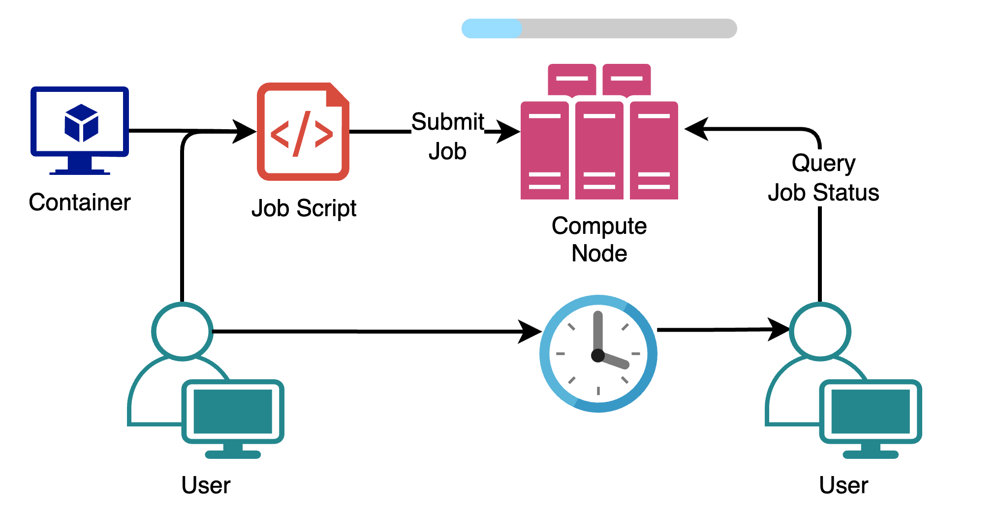

{local}$ ssh alice@log1.wynton.ucsf.edu
alice@log1.wynton.ucsf.edu's password:
[alice@log1 ~]$Part 1
October 02, 2025
Natalie Gill
Bioinformatician II
Names:
log1, log2 and plog1 (for PHI users)
{local}$ ssh alice@log1.wynton.ucsf.edu
alice@log1.wynton.ucsf.edu's password:
[alice@log1 ~]$ssh dev1Names:
dev[1-3], gpudev1, pdev1 (PHI) and pgpudev1 (PHI)
Example:
{local}$ scp local_file.tsv alice@dt1.wynton.ucsf.edu:~/Names:
dt1 and dt2

To check your group disk quota run:
beegfs-ctl --getquota --storagepoolid=12 --gid "$(id --group)"Files not used for 2 weeks are automatically deleted
{local}$ scp /path/to/local_file.tsv alice@dt1.wynton.ucsf.edu:/destination/path{local}$ scp -r local_folder/ alice@dt1.wynton.ucsf.edu:/destination/path{local}$ scp alice@dt1.wynton.ucsf.edu:/path/to/local_file.tsv /destination/pathPoll 1 - Which of these can you not SSH in to?
The /wynton directory is backed up on a nightly basis, so there is no need to back up anything stored here.
[alice@dev1 ~]$ mkdir -p "/scratch/$USER"
[alice@dev1 ~]$ cd "/scratch/$USER"
[alice@dev1 alice]$ wget https://github.com/samtools/samtools/releases/download/1.21/samtools-1.21.tar.bz2
[alice@dev1 alice]$ tar -x -f samtools-1.21.tar.bz2[alice@dev1 ~]$ mkdir -p $HOME/software/samtools-1.21
[alice@dev1 ~]$ cd samtools-1.21
[alice@dev1 ~]$ ./configure --prefix=$HOME/software/samtools-1.21[alice@dev1 ~]$ make
[alice@dev1 ~]$ make install[alice@dev1 ~]$ echo "export PATH=$HOME/software/samtools-1.21/bin:\$PATH" >> $HOME/.bashrc
[alice@dev1 ~]$ source $HOME/.bashrc[alice@dev1 ~]$ samtools --helpProgram: samtools (Tools for alignments in the SAM format)
Version: 1.21 (using htslib 1.21)
Usage: samtools <command> [options][alice@dev1 ~]$ cd ~/software
[alice@dev1 ~]$ curl -s "https://get.sdkman.io" | bash
[alice@dev1 ~]$ exit
[alice@log1 ~]$ ssh dev1
[alice@dev1 ~]$ sdk install java 17.0.6-tem
[alice@dev1 ~]$ wget -qO- https://get.nextflow.io | bash
[alice@dev1 ~]$ nextflow -vWynton supports Apptainer (formerly singularity) containers
Docker is a commonly used image creation software, these can be turned into apptainer image files (.sif) easily
apptainer run
apptainer exec
apptainer shell
[alice@dev1 ~]$ apptainer pull docker://natalie23gill/hello-world:1.0[alice@dev1 ~]$ apptainer exec hello-world_1.0.sif hi __ __ ____ _ __ __ __ __
/ / / /__ / / /___ | | / /___ _____/ /___/ / / /
/ /_/ / _ \/ / / __ \ | | /| / / __ \/ ___/ / __ / / /
/ __ / __/ / / /_/ / | |/ |/ / /_/ / / / / /_/ / /_/
/_/ /_/\___/_/_/\____/ |__/|__/\____/_/ /_/\__,_/ (_) [alice@dev1 ~]$ apptainer exec hello-world_1.0.sif figlet your_text[alice@dev1 ~]$ apptainer exec hello-world_1.0.sif cat /DockerfilePlease take some time to fill out the workshop survey if you are not attending part 2:
Intermediate RNA-Seq Analysis Using R
October 6, 2025 1:00-4:00pm PDT
Introduction to Pathway Analysis
October 16, 2025 1:00-4:00pm PDT
Statistics of Enrichment Analysis Methods
October 20-October 21, 2025 1:00-3:00pm PDT
Single Cell RNA-Seq Analysis
October 27-October 28, 2025 9:00-4:00pm PDT